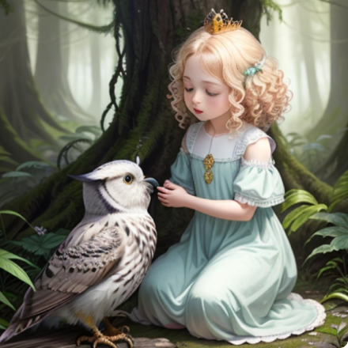

Nature Protection in Harmony with Ancient Forests

About Our Mission
"The Elven Eco-Protection Service" aims to protect nature, preserve forests and water bodies, and maintain harmony within the natural world of the elves. Our mission is to safeguard ecosystems and restore balance between nature and human activity. We are committed to conserving flora and fauna, ensuring sustainable development, and protecting the environment for the long term."
Forest Inspections
We regularly conduct monitoring to prevent pollution and
deforestation.
Our inspectors patrol forests and water bodies to prevent illegal
activities. We carry out rehabilitation projects to restore local
ecosystems, regenerate degraded areas, and ensure the safety of
biodiversity. In addition, we actively support joint initiatives with
other environmental organizations to preserve the unique elven nature.
The History of Elves and Forests
-
Elves have always shared a profound bond with the forests, seeing them as sacred spaces where all life is interconnected. Our traditions emphasize maintaining nature’s delicate balance, understanding that every tree, plant, and creature contributes to the ecosystem's health. Elders pass this wisdom down through stories and practices that guide each generation to live in harmony with the natural world.
- 
-
Today, as the guardians of these lands, we actively protect our forests from threats, working to preserve their beauty and vitality. Our efforts include regular patrolling, ecosystem monitoring, and swift response to any disturbances, ensuring the forest remains a sanctuary for all living beings. Through these actions, we uphold the legacy of our ancestors while preparing the way for future generations, ensuring that they too inherit a world that thrives in harmony and balance.
Our Projects
We actively implement projects focused on restoring forest ecosystems, protecting flora and fauna. Our initiatives include the rehabilitation of degraded areas, reforestation, and the protection of water bodies. We also conduct educational programs and campaigns to raise environmental awareness among the public and engage them in joint efforts to preserve the environment.